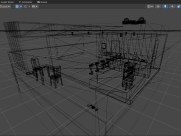
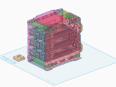
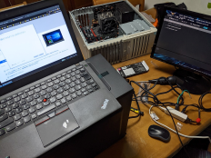

About
牧瀬 ねう
PCゲームが趣味です。電子工作や写真撮影、コーディングなどもします。
写真
主に動物を撮っています

コーディング
どちらかというとバックエンドや小さなツールを作るのが得意
HTML / JavaScript / Perl / PHP / Python / SQL / BAT / etc...

ゲーム向けMOD開発など
最近はUnityを使ったVR SNS向けのコンテンツの改変・公開などをしています

電子工作
Arduinoを使った電子工作、3Dプリンタによるパーツ造形など

ハードウェア
自作PC / インフラ / サーバ構築 / 仮想化(VMware) / etc...